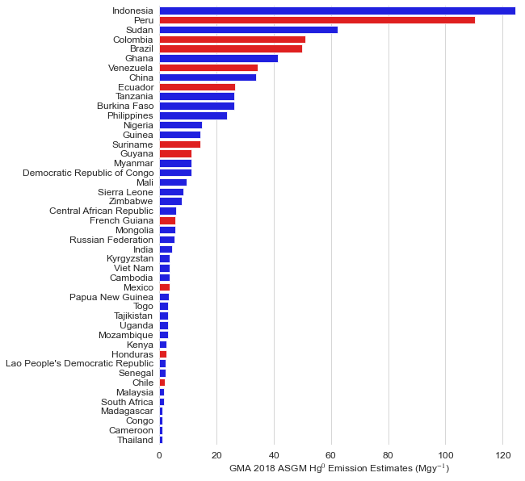

Intro Code
Contents
Intro Code#
Chapter 1 Jupyter Notebook#
This notebook shows how the figures used in chapter 1 were generated
import numpy as np
import pandas as pd
import matplotlib.pyplot as plt
import plotly.express as px
import seaborn as sns
import os
from gamap_colormap import WhGrYlRd # import the "WhGrYlRd" variable from my custom Python script
import matplotlib.pyplot as plt
import matplotlib as mpl
from matplotlib.ticker import ScalarFormatter,AutoMinorLocator
plt.style.use(
"https://github.com/aeturrell/coding-for-economists/raw/main/plot_style.txt"
)
mpl.rcParams.update({"lines.linewidth": 1.2})
# Set max rows displayed for readability
pd.set_option("display.max_rows", 8)
import warnings
warnings.filterwarnings("ignore")
# workstation = "deepnote"
workstation = "laptop"
---------------------------------------------------------------------------
ModuleNotFoundError Traceback (most recent call last)
Cell In [1], line 2
1 import numpy as np
----> 2 import pandas as pd
3 import matplotlib.pyplot as plt
4 import plotly.express as px
ModuleNotFoundError: No module named 'pandas'
GlobalHgInventry={
'Fuel combustion':533,
'Industry Sectors':614,
'Intentional Use(including product waste)':239,
'Artisanal and Small Scale Gold Mining':838,
'Total':2220,
'Total Lower':2000,
'Total Upper':2820}
ASGM_perRegion={
'Australia, New Zealand & Oceania':0.0,
'Central America and the Caribbean':14.3,
'CIS & other European countries':12.7,
'East and Southeast Asia':214,
'EU28':0.0,
'Middle Eastern States':0.225,
'North Africa':0.0,
'North America':0.0,
'South America':340,
'South Asia':4.50,
'Sub-Saharan Africa':252
}
df_asgmPregion=pd.DataFrame([ASGM_perRegion])
df_asgmPregion=df_asgmPregion.T
df_asgmPregion=df_asgmPregion.sort_values(by=[0])
df_asgmPregion=df_asgmPregion.reset_index()
df_asgmPregion=df_asgmPregion.rename(columns={'index':'World Regions',0:"ASGM Emission(t)"})
# Make a barplot
chart=sns.barplot(
x="World Regions",
y="ASGM Emission(t)",
data=df_asgmPregion,
color='#FFA500'
);
# Rotate tick labels
chart.set_xticklabels(chart.get_xticklabels(), rotation=45,horizontalalignment='right')
[Text(0, 0, 'Australia, New Zealand & Oceania'),
Text(1, 0, 'EU28'),
Text(2, 0, 'North Africa'),
Text(3, 0, 'North America'),
Text(4, 0, 'Middle Eastern States'),
Text(5, 0, 'South Asia'),
Text(6, 0, 'CIS & other European countries'),
Text(7, 0, 'Central America and the Caribbean'),
Text(8, 0, 'East and Southeast Asia'),
Text(9, 0, 'Sub-Saharan Africa'),
Text(10, 0, 'South America')]
ASGM_emissions=pd.read_csv('hgASGM.csv')
ASGM_emissions['Country']=ASGM_emissions['Country'].str.strip()
air_emissions=pd.DataFrame(ASGM_emissions['Country'])
print(air_emissions)
Country
0 Bolivia
1 Guinea
2 Nicaragua
3 Peru
.. ...
75 Eswatini
76 Ukraine
77 Uzbekistan
78 Zambia
[79 rows x 1 columns]
air_emissions['Emissions, t']=ASGM_emissions['Mean air emission, t']
air_emissions
| Country | Emissions, t | |
|---|---|---|
| 0 | Bolivia | 40.5 |
| 1 | Guinea | 14.3 |
| 2 | Nicaragua | 0.7 |
| 3 | Peru | 110.4 |
| ... | ... | ... |
| 75 | Eswatini | 0.2 |
| 76 | Ukraine | 0.2 |
| 77 | Uzbekistan | 0.2 |
| 78 | Zambia | 0.2 |
79 rows × 2 columns
# Initialize the matplotlib figure
sns.set_style("whitegrid")
fig,ax = plt.subplots(figsize=(8, 10))
plot_data = air_emissions.drop(0, axis=0).sort_values(by='Emissions, t', ascending=False)
plot_data=plot_data[plot_data['Emissions, t']>1]
latam_emitters=['Peru','Colombia','Brazil','Bolivia','Suriname','Ecuador','French Guiana','Venezuela','Guyana','Chile','Honduras','Mexico']
# Load the example car crash dataset
# crashes = sns.load_dataset("car_crashes").sort_values("total", ascending=False)
colors = ["blue" if i not in latam_emitters else "red" for i in plot_data.Country]
# Plot the total crashes
sns.set_color_codes("muted")
sns.barplot(x="Emissions, t", y="Country", data=plot_data ,
label="Emissions", palette=colors)
ax.set(xlim=(0, 126), ylabel="",
xlabel="GMA 2018 ASGM Hg$^0$ Emission Estimates (Mgy$^{-1}$)")
sns.despine(left=True, bottom=True)
# name='07-14-22_gma2018_top-asgm-emmiting-countries.pdf'
# savepath='/home/tzd/fs03/d1/tzd/Data_analysis/MIT_TPP_thesis/figures/'+name
# fig.savefig(savepath,bbox_inches='tight')

df_countries=pd.read_csv('countries.csv')
df_countries['NAME']=df_countries['NAME'].str.strip()
df_countries['ISO']= df_countries['ISO'].str.strip()
asgm_list=list(air_emissions['Country'])
iso=df_countries[df_countries['NAME'].isin(asgm_list)]
iso
| ISO | NAME | |
|---|---|---|
| 2 | AGO | Angola |
| 16 | AZE | Azerbaijan |
| 17 | BDI | Burundi |
| 19 | BEN | Benin |
| ... | ... | ... |
| 241 | VNM | Viet Nam |
| 246 | ZAF | South Africa |
| 247 | ZMB | Zambia |
| 248 | ZWE | Zimbabwe |
79 rows × 2 columns
emitters=list(ASGM_emissions['Country'].values)
len(emitters)
79
df_asgm_air_hg=air_emissions.merge(iso,how='left',left_on='Country',right_on='NAME')
# WhGrYlRd.colors
import matplotlib.pyplot as plt
from gamap_colormap import WhGrYlRd
from matplotlib.colors import to_hex, to_rgb, CSS4_COLORS, LinearSegmentedColormap, ListedColormap
from matplotlib.cm import ScalarMappable
def find_closest_name(col):
rv, gv, bv = to_rgb(col)
min_colors = {}
for col in CSS4_COLORS:
rc, gc, bc = to_rgb(col)
min_colors[(rc - rv) ** 2 + (gc - gv) ** 2 + (bc - bv) ** 2] = col
closest = min(min_colors.keys())
return min_colors[closest], np.sqrt(closest)
vals = np.linspace(0, 1, 12)
[(val, to_hex(WhGrYlRd(val))) for val in vals]
semi_wgyr = [find_closest_name(WhGrYlRd(val))[0] for val in vals]
semi_wgyr
['white',
'paleturquoise',
'lightskyblue',
'mediumturquoise',
'lightgreen',
'greenyellow',
'gold',
'darkorange',
'red',
'red',
'darkred',
'maroon']
if workstation=='laptop':
fig_path='/Users/shakes/Dropbox/Apps/Overleaf/Thandolwethu Dlamini Thesis/templates/figures/'
else:
fig_path='/work/MIT_TPP_thesis/figures/'
# Initialize the matplotlib figure
sns.set_style("whitegrid")
fig,ax = plt.subplots(figsize=(8, 10))
plot_data = air_emissions.drop(0, axis=0).sort_values(by='Emissions, t', ascending=False)
plot_data=plot_data[plot_data['Emissions, t']>1]
latam_emitters=['Peru','Colombia','Brazil','Bolivia','Suriname','Ecuador','French Guiana','Venezuela','Guyana','Chile','Honduras','Mexico']
# Load the example car crash dataset
# crashes = sns.load_dataset("car_crashes").sort_values("total", ascending=False)
colors = ["blue" if i not in latam_emitters else "red" for i in plot_data.Country]
# Plot the total crashes
sns.set_color_codes("muted")
sns.barplot(x="Emissions, t", y="Country", data=plot_data ,
label="Emissions", palette=colors)
ax.set(xlim=(0, 126), ylabel="",
xlabel="GMA 2018 ASGM Hg$^0$ Emission Estimates (Mgy$^{-1}$)")
sns.despine(left=True, bottom=True)
# name='07-14-22_gma2018_top-asgm-emmiting-countries.pdf'
# savepath='/home/tzd/fs03/d1/tzd/Data_analysis/MIT_TPP_thesis/figures/'+name
# fig.savefig(savepath,bbox_inches='tight')
print(df_asgm_air_hg.head())
print(df_asgm_air_hg.columns)
Country Emissions, t ISO NAME
0 Bolivia 40.5 BOL Bolivia
1 Guinea 14.3 GIN Guinea
2 Nicaragua 0.7 NIC Nicaragua
3 Peru 110.4 PER Peru
4 Senegal 2.3 SEN Senegal
Index(['Country', 'Emissions, t', 'ISO', 'NAME'], dtype='object')
df_asgm_air_hg.sort_values(by='Emissions, t', ascending=False).head()
| Country | Emissions, t | ISO | NAME | |
|---|---|---|---|---|
| 16 | Indonesia | 124.5 | IDN | Indonesia |
| 3 | Peru | 110.4 | PER | Peru |
| 44 | Sudan | 62.3 | SDN | Sudan |
| 9 | Colombia | 51.0 | COL | Colombia |
| 6 | Brazil | 49.9 | BRA | Brazil |
import plotly.graph_objects as go
plotData=df_asgm_air_hg.sort_values(by='Emissions, t', ascending=False)
y=plotData['Emissions, t'][:20]
x = plotData['Country'][:20]
latam_emitters=['Peru','Colombia','Brazil','Bolivia','Suriname','Ecuador','French Guiana','Venezuela','Guyana','Chile','Honduras','Mexico']
colors = ["blue" if i not in latam_emitters else "red" for i in x]
fig = go.Figure(data=[go.Bar(
x=x,
y=y,
marker_color=colors # marker color can be a single color value or an iterable
)])
# fig.update_layout(title_text='Least Used Feature')
# fig.update_layout(showlegend=True)
fig.update_layout(xaxis_tickangle=30,
xaxis=dict(tickmode='linear'),
template="simple_white",
legend=dict(
title=None, orientation="h", y=1, yanchor="bottom", x=0.5, xanchor="center"))
fig.show()
import plotly.express as px
import plotly.graph_objects as go
fig = go.Figure(data=go.Choropleth(
locations=df_asgm_air_hg['ISO'],
z=df_asgm_air_hg["Emissions, t"].astype(float), # lifeExp is a column of gapminder
# hover_name=df_asgm_air_hg["Country"],
colorscale = semi_wgyr,#'Reds',
colorbar_orientation = 'h',
colorbar_title = "ASGM Mercury Emission Estimates (tons/year)",
colorbar_titleside = 'bottom',
colorbar_y = -0.15,
# range_color=(0, df_asgm_air_hg["Emissions, t"].max())
colorbar_len = 0.75,
# colorbar_ticklabelstep=10
))# column to add to hover information)
fig.update_geos(fitbounds="locations", visible=False,
showcountries=True)
fig.update_geos(projection_type="natural earth")
fig.update_layout(height=500, margin={"r":0,"t":0,"l":0,"b":0})
fig_name='07-14-22_gma2018_asgm-emmiting-countries.pdf'
path=fig_path+fig_name
fig.write_image(path)
fig.show()
import plotly.graph_objects as go
from plotly.subplots import make_subplots
plotData['Country'].replace('Democratic Republic of Congo', 'DRC', inplace=True)
y=plotData['Emissions, t'][:19]
x = plotData['Country'][:19]
# Initialize figure with subplots
fig = make_subplots(
rows=2, cols=1,
row_heights=[0.9, 0.4],
specs=[[{"type": "choropleth"}],[{"type": "bar"}]],
vertical_spacing=0)
# Add scattergeo globe map of volcano locations
fig.add_trace(go.Bar(
x=x,
y=y,
text=y,
texttemplate='%{text:.2s}',
textposition='outside',
marker={'color': y,
'colorscale': semi_wgyr,
}),
# marker color can be a single color value or an iterable
row=2, col=1
)
# Add locations bar chart
fig.add_trace(
go.Choropleth(
locations=df_asgm_air_hg['ISO'],
z=df_asgm_air_hg["Emissions, t"].astype(float), # lifeExp is a column of gapminder
# hover_name=df_asgm_air_hg["Country"],
colorscale = semi_wgyr,#'Reds',
colorbar_orientation = 'v',
colorbar_title = "Hg(tons/year)",
colorbar_titleside = 'top',
# colorbar_y = -0.5,
# range_color=(0, df_asgm_air_hg["Emissions, t"].max())
colorbar_len = 0.75,
coloraxis='coloraxis'
# colorbar_ticklabelstep=10
),
row=1, col=1
)
# Add 3d surface of volcano
fig.update_traces(marker_cmax=df_asgm_air_hg["Emissions, t"].max(), selector=dict(type='bar'))
fig.update_traces(marker_cmin=df_asgm_air_hg["Emissions, t"].min(), selector=dict(type='bar'))
# fig.update_traces(marker_colorbar_title_text="Hg(tons/year)", selector=dict(type='choropleth'))
# Update geo subplot properties
fig.update_geos(
projection_type="natural earth",
fitbounds="locations",
visible=False,
showcountries=True,
resolution=50,
)
# Rotate x-axis labels
fig.update_xaxes(tickangle=35)
# Set theme, margin, and annotation in layout
fig.update_layout(
autosize=False,
width=900,
height=600,
template="plotly_white",
margin={"r":0,"t":0,"l":0,"b":0},
yaxis = {'showgrid': False}
)
fig.update_yaxes(range=[0,145])
fig.update_coloraxes(
cmax=df_asgm_air_hg["Emissions, t"].max(),
cmin=df_asgm_air_hg["Emissions, t"].min(),
colorbar_dtick=10,
colorbar_tick0=0
)
fig.update_layout(coloraxis=dict(colorscale=semi_wgyr,))
fig.update_coloraxes(colorscale=semi_wgyr,colorbar_title_text="Hg (t/y)")
fig_name='07-14-22_gma2018_asgm-emmiting-countries.pdf'
path=fig_path+fig_name
fig.write_image(path)
fig.show()
df_emission_sectors=pd.DataFrame([GlobalHgInventry]).T.reset_index()
df_emission_sectors=df_emission_sectors.rename(columns={"index": "Emission Sectors", 0: "Emissions Amount,t"})
df_emission_sectors
| Emission Sectors | Emissions Amount,t | |
|---|---|---|
| 0 | Fuel combustion | 533 |
| 1 | Industry Sectors | 614 |
| 2 | Intentional Use(including product waste) | 239 |
| 3 | Artisanal and Small Scale Gold Mining | 838 |
| 4 | Total | 2220 |
| 5 | Total Lower | 2000 |
| 6 | Total Upper | 2820 |
fig = px.bar(df_emission_sectors[:4], x="Emission Sectors", y="Emissions Amount,t", color="Emission Sectors",
orientation="v", hover_name="Emissions Amount,t",
color_discrete_sequence=[
"orange", "red", "green", "blue"],
title="Hg Emission Sectors"
)
fig.show()
df_emission_sectors[:4]
| Emission Sectors | Emissions Amount,t | |
|---|---|---|
| 0 | Fuel combustion | 533 |
| 1 | Industry Sectors | 614 |
| 2 | Intentional Use(including product waste) | 239 |
| 3 | Artisanal and Small Scale Gold Mining | 838 |
list(df_emission_sectors[:4]['Emissions Amount,t'])
[533, 614, 239, 838]
import plotly.graph_objects as go
labels = list(df_emission_sectors[:4]['Emission Sectors'])
values = list(df_emission_sectors[:4]['Emissions Amount,t'])
colors=[ "blue", "red", "green","orange"]
ind_names=['533 Mg', '614 Mg', '239 Mg', '838 Mg']
# Use `hole` to create a donut-like pie chart
fig = go.Figure(data=[go.Pie( labels=labels, values=values,text=ind_names, textinfo='text+percent',pull=[0, 0, 0, 0.05],marker_colors=colors)])
fig.update_traces(hoverinfo='label+percent', textfont_size=14,
marker=dict(colors=colors))
name='07-24-22_gma2018_hg-emissions_by-industry.pdf'
savepath='/home/tzd/fs03/d1/tzd/Data_analysis/MIT_TPP_thesis/figures/'+name
# fig.savefig(savepath,bbox_inches='tight')
fig.write_image(savepath)
fig.show()
NAPHG=pd.DataFrame(pd.read_csv('NAPsubmits.csv'))
NAPHG
| Country | NAP_Mercury_use t/y | GMA_Mercury_use t/y | Target% | Taget_year | |
|---|---|---|---|---|---|
| 0 | Central African Republic | 0.0000 | 8.0 | NaN | NaN |
| 1 | Congo | 0.0200 | 1.5 | NaN | NaN |
| 2 | Lao PDR | 0.2295 | 3.0 | NaN | NaN |
| 3 | Mongolia | 0.2350 | 11.5 | NaN | NaN |
| ... | ... | ... | ... | ... | ... |
| 13 | Madagascar | 31.1000 | 1.5 | 50% | 2022.0 |
| 14 | Mali | 33.3000 | 12.5 | 10% | 2023.0 |
| 15 | Guinea | 42.1000 | 19.1 | 50% | 2022.0 |
| 16 | Burkina Faso | 77.6000 | 35.1 | 50% | 2024.0 |
17 rows × 5 columns